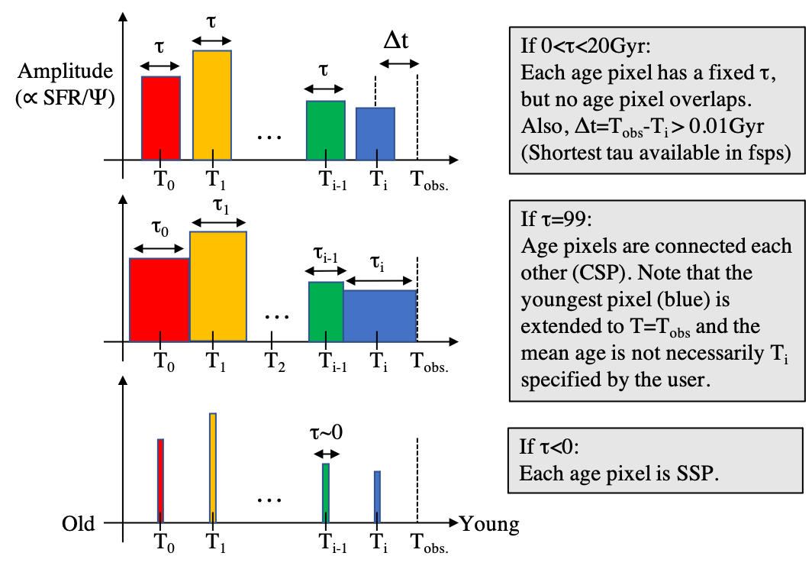

Generating templates¶
Rest-frame templates¶
gsf generates model spectral templates via python-fsps citep{foreman14}, based on the parameters in the configuration file. The parameters are limited from the original fsps citep{conroy09fsps}, such as the range in metallicity, initial mass function (IMF), and ionizing parameter.
It is in this step that generates templates with different ages and metallicities. The templates are saved in a common file, “spec_all.asdf” (irrespective to object IDs), for the aim of saving time. Redshifted templates (Section~ref{ssec:zinp}), which are actually used in the fitting process, are based on this file. Therefore, if one wish to change any of template parameters (IMF, age/metallicity range and step etc.), it is suggested to save the previous file to avoid overwrite, or move in another directory to avoid confusion.
Age pixels determine the number of templates at different lookback times. The length of star formation is specified by a parameter, TAU0, in the configuration file. The length, if specified to a value <99, is uniform in all age pixels in the current version (Figure~ref{fig:pixel}). If set to 99, then the CSP is applied so that age pixels are continuously connected each other. If set to a negative value, then SSP is applied.
Shifting templates to the input redshift¶
It is at this stage where gsf applies dust attenuation and also IGM attenuation for those \(z>6\).
